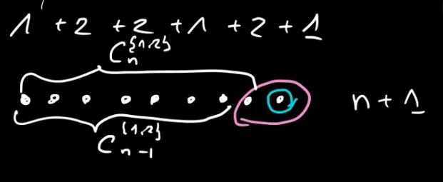

2020-10-26
Partycje liczb to są kompozycje liczb z pewnym ograniczeniem: \[ n = x_1 + x_2 + x_3 + \dotsb + x_k \qquad x_i \ge 1\\ x_1 \ge x_2 \ge x_3 \ge \dots \ge x_k \]
Kiedy kompozycje można określić klasą \(\mathcal{C} \cong \operatorname{SEQ}(\operatorname{SEQ}_{\ge 1}(\mathcal{Z}))\) to klasę opisującą partycje liczb można określić przez: \[ \mathcal{P} \cong \operatorname{MSET}(\operatorname{SEQ}_{\ge 1}(\mathcal{Z})) \]
\(P(z) = \prod_{n=1}^\infty \frac{1}{1 - z^n}\)
Partycja liczb na \(1\) oraz \(2\).
\(\mathcal{P}^{\left\{1,2\right\}}(z) = \frac{1}{1-z} \cdot \frac{1}{1-z^2}\)
Swoją drogą to \(\mathcal{C}_n^{\left\{ 1,2 \right\}} = F_{n+1}\), bo zachodzi równość \(\mathcal{C}_{n+1}^{\left\{ 1,2 \right\}} = \mathcal{C}_{n-1}^{\left\{ 1,2 \right\}} + \mathcal{C}_{n}^{\left\{ 1,2 \right\}}\)
Visual aid jako przykład dla liczby \(9\):

Oznaczenie: \(\mathcal{C}^{(k)}\) — kompozycja z podziałem na \(k\) elementów
\(\mathcal{C}^{(k)} \cong \operatorname{SEQ}_k(\mathcal{I}) = (\mathcal{I})^k \quad \mathcal{I} = \mathcal{N}_+\) (w rozumieniu liczby naturalne bez zera)
Przy ustalonym pewnym \(k\) mamy \[ n = x_1 + x_2 + \dotsb + x_k\\ \text{przy czym } x_1 \ge x_2 \ge x_3 \ge \dotsb \ge x_k \]